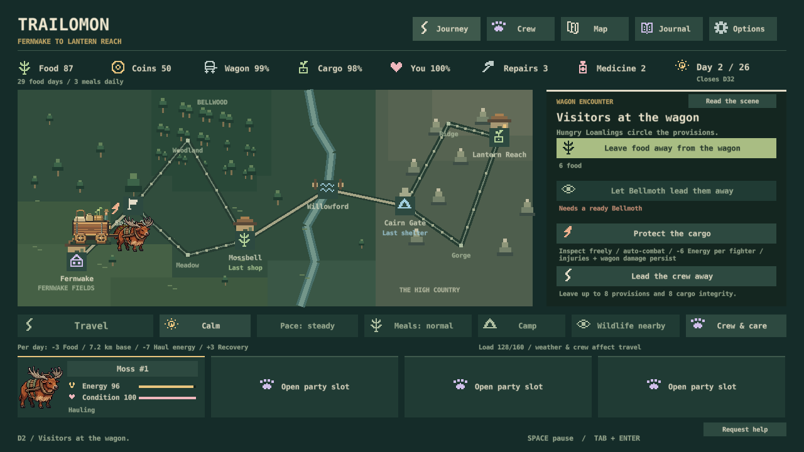
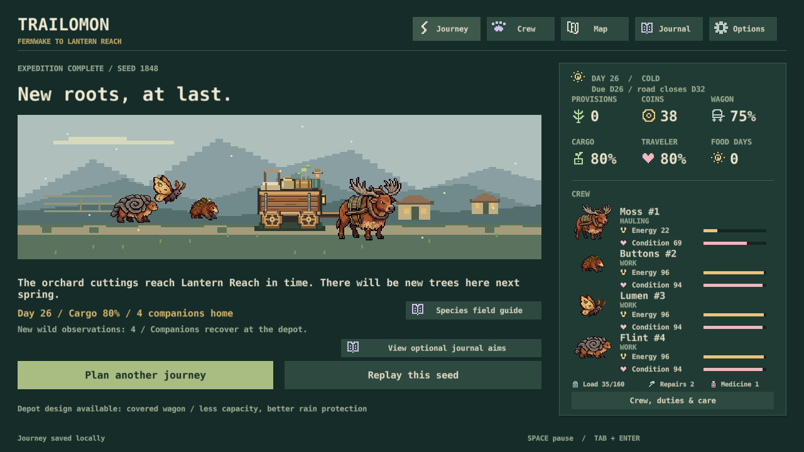

Trailomon / development blueprint / November 4
Make every system change the next decision.
A creature-collecting expedition built around automatic wagon defense. This is the new planning document, not a claim that the features below are already playable.
One expedition, six connected decisions
Find a new possibility
Habitat encounters lead to individual companions and their own stories.
Changes → party options, innate powers, equipment sockets.
Build a crew
Choose a hauler, fighters and support. Inspect one clear sheet per creature.
Changes → meals, field help, formation and item combinations.
Read the next risk
Threats, discoveries, weather and distance to care make branches matter.
Changes → what to equip, protect and keep in reserve.
Watch preparation work
Zone targeting, repeating skills and passives interact on a shared field.
Changes → injuries, XP, gear discoveries and wagon condition.
Decide how far to push
Heal or revive at stops, exchange a hurt companion, repair and repack.
Changes → the next team, supply budget and route choice.
Bring home possibilities
Keep individual levels, discoveries and stories. Plan another expedition.
Changes → future builds without removing travel decisions.
Admission rule: each new system must improve at least two parts of this loop and have one obvious visual home. Individual species can still be pure fighters, food animals or wildlife.
What stays
One traveler, one wagon, four active companions, uncapped collection, ecological creatures, increasingly wild country, calm time to decide. Six species prove the loop first; at least 300 remains the expanded-world target.
What changes
Combat becomes central. Battle XP, care stops, reserves, species-specific sockets and a real catalogue connect the current systems. Old no-XP, one-slot and departure-only-reserve limits no longer govern new development.
Clarity is part of the mechanic
Branches · threats · habitats · services
Encounter opens here, without a map jump.Always visible: what happens next, who is ready, what it costs and what is at risk.
On inspection: effective stats, targeting, exact item effects and damage causes.
In the journal: sources, ecology, history and longer explanations.
Underlined keywords work with hover, keyboard focus and click. Color reinforces shape, labels and signed numbers; it never carries meaning alone.
Layout diagram only. It describes information priority, not finished game art.
Build complete connections, in order
S41–S42: stable map arrival + help → zone combat + visible targets.
S43–S44: individual XP + care/reserves → sheets + species sockets + item discovery.
S45: authored route threats/rewards; test a complete collecting-to-combat-to-recovery expedition.
S46–S47, if selected: functional wagon components → protected loads.
S48: whole-loop balance, old-system cleanup and visual acceptance. Then resume the queued ecological experiments and species expansion.
Fresh playthrough: what exposed the gaps?
Current shipped build, Discovery seed 1848, solo Brindlehorn. Delivered on day 26 with 80 cargo, zero food and four companions. Only one battle, an early crew knockout. Care worked but was scattered across menus. Encounter arrival resized the map. No battle growth rewarded the individual.
Actual release-rendered UI and callbacks, no forced resources/events. This is a developer-driven baseline, not a blind human fun score or physical-input/audio test. The updated expert/new-player runs are still ahead.




Only two new design decisions
The combat, growth, recovery, collecting and sheet work above was already requested. These two proposals choose how deeper wagon/cargo systems should work.
G1Give wagon damage a physical cause
Use three functional parts: running gear for mobility, frame for structural safety, cover for exposure. Inspect them on the wagon; keep one short roadworthy summary on the map. Compare field patch and service repair.
Why: today's single wagon percentage does not distinguish rough-road wear, battle impact and weather protection. Parts connect combat, repair supplies, hauling and route planning.
Cost: one staged system step, derived travel rules, old-save migration and wagon/repair UI. Risk: more maintenance; use contextual warnings instead of three extra HUD bars. Recommendation: YES, after the combat/growth spine works.
G2Protect a load you can see
Keep the current weight limit and add two protected cargo positions plus an exposed rack. Choose whether delivery crates, food or valuable finds get shelter. Show the threatened load before weather or a raid resolves.
Why: today's cargo percentage and load number barely explain what the wagon is carrying. A visible protection choice connects cover, utility equipment, weather, combat and the delivery.
Cost: one staged cargo/UI step with ownership, damage and migration checks. No Tetris grid, item rotation or per-apple durability. Recommendation: YES, tested first with a few meaningful loads.
Full development documents
These contain the dependencies, ownership rules, migration contracts, keep/update/retire audit and acceptance checks. Status distinguishes shipped, planned, conditional and unfinished experimental work.
Read the full game plan
Trailomon — integrated game plan
November 4, 2026. Defold + Lua. Offline Windows. One complete, readable expedition before expanding the world. This replaces the earlier plan, preserved in the archive.
The game: a creature-collecting wagon expedition in which the team you befriend, train and equip determines how you survive increasingly dangerous country. Astronarch-style automatic battles are a central source of tension. The Oregon Trail journey gives those battles a purpose: protecting a delivery, managing a battered wagon, choosing how far to push, and deciding when to seek care. The map and the creatures lead the interface.
This is a development plan, not a claim that proposed systems already exist. The integration blueprint defines system boundaries, visuals and save behavior. The roadmap orders playable deliveries. These documents supersede conflicting older design proposals; historical saves still need their original rules.
1. Established direction
- One traveler, one wagon, up to four active companions. An uncapped collection of individuals, including duplicates, lives at Wayhome Commons.
- Original creatures grounded in habitats, bodies and behavior. Individual abilities replace a universal type chart or fixed class system. Combat specialists and ordinary wildlife do not need mandatory travel utility.
- The eventual index contains at least 300 distinct species. Six are playable; 24 briefs exist. Empty index slots and recolors do not count as species.
- Combat follows Astronarch's preparation, formation, independent attack clocks, repeating skills and interacting items. The wagon is an additional defendable target. Automon informs collecting appeal rather than the resolver.
- Battle leveling, heal/revive stops, reserve exchanges, species-specific equipment capacity, individual sheets, item discovery and an implemented-item catalogue are directly requested.
- A more robust wagon/cargo/repair system is requested; its exact component and packing model is proposed below.
- Visual clarity is a release requirement: minimal routine text, shared original icons, consistent colors, contextual explanations and meaningful movement. Existing creature assets remain until the later owner-led overhaul.
- PC/local review is sufficient. Hosted phone publication is no longer a default requirement.
2. The connected loop
Meet → collect → choose four → equip → choose a route → defend the wagon → earn growth and discoveries → repair, heal or exchange → push farther → return with new possibilities.
| Decision | Immediate effect | Later consequence | Visible connection |
|---|---|---|---|
| Befriend a creature | New individual joins party or Commons | New formation, skill or equipment capacity | Encounter → portrait → sheet |
| Equip for combat or travel within available slots | Changes attacks, skills or road assistance | Changes the threat/route the team can handle | Sheet → forecast → result |
| Take a dangerous branch | More serious encounter/discovery opportunity | XP and gear options versus injuries and damage | Map → battle → receipt |
| Put a protector in a raider's zone | Redirects pressure away from the wagon | Preserves delivery prospects; protector may need care | Target line → hit → care preview |
| Exchange an injured fighter | New team composition | Less treatment spending; different hauling/meals | Stop → party → next-leg forecast |
| Carry more repair supplies | Less load for food/finds | More freedom to take rough routes | Wagon → route outlook |
Feature admission rule: improve at least two parts of this loop, give the feature one obvious visual home, and explain any new persistent meter. This applies to systems, not a requirement that every species have several utility jobs.
3. Five pillars
1. Preparation becomes visible action. The player follows targeting, skills, protection and the reason a build worked.
2. Battles matter afterward. Injuries, growth, gear and wagon consequences immediately affect the journey.
3. Collect possibilities; remember individuals. Identity, origin, level and history belong to individuals, including duplicates.
4. Push farther from help. Early stops support and teach; later stretches demand preparation. Calm means time to decide, not an absence of danger.
5. Read the world before a ledger. Geography, creatures, targets and visible damage explain decisions; detailed accounting is available on inspection.
4. Shipped baseline and gaps
Playable baseline: PR #53 / 46ac095. The installed desktop shortcut follows the latest successful local player build.
| Area | Shipped | Needed connection |
|---|---|---|
| Journey | Six stops, two forks, weather, food, deadline, moving map wagon | Stable arrival; visible threats/services; fewer repeated confirmations |
| Collecting | Four active, uncapped individuals, duplicates, origins, waybeds | Reserve exchange at stops; active/reserve sheets |
| Combat | Six kits; independent attacks/Focus; front/rear lanes; wagon defense; two road encounters and practice | Two zones, target previews, encounter composition and rewards |
| Growth | Habits, trust, observations and memories | Individual battle XP/levels and readable stat effects |
| Equipment | Three work items, one slot, run inventory/weight | Species-specific sockets; catalogue, discovery and interactions |
| Recovery | Camp, medicine, repairs and lasting injuries | Named heal/revive stops; coherent quotes; reserve access |
| Wagon/cargo | Wagon %, cargo %, load/capacity; open/covered variants | Better explanation; evaluate components and protected loads |
| Interface | Main map/party updated; older secondary menus remain | Shared sheets, help, targeting and consequence presentation |
An unreleased simulation experiment exists on codex/expedition-rpg (874cb5d). It is not player-ready: the old UI does not support its new positions, new-system tests and balance are incomplete, and no build/PR was shipped. Its tentative XP, prices and early-enemy tuning are not commitments. Reuse reviewed pieces in roadmap order, not as one unchecked merge.
Fresh playthrough evidence
On November 4, a developer-driven Discovery run of the actual release renderer used seed 1848 and a solo Brindlehorn. It delivered on day 26 with 80 cargo, zero food and four companions. It contained one battle, lost by crew knockout, followed by field recovery. No encounters/resources were forced. Recorded evidence and limits.
Observed gaps: opening an encounter resizes the map; care is spread across menus; departure/outcomes often require another Travel click; battles grant no individual growth; one early fight does not sustain combat tension. This is one seeded developer playthrough, not a population balance result or blind human fun score. Updated expert/new-player full runs remain required.
5. System direction
Collection, powers and growth
Each individual retains ID, name, species, origin, total XP, derived level and memories. The traveling instance also has health, energy, duty and equipment. A duplicate is a new individual, not a species-wide stat upgrade.
First slice: one repeating active skill, one innate passive, and a field action when ecology supports one. Show these separately. Gear modifies interactions; no second skill tree is necessary. A combat specialist may lack a field action.
Battle XP gives modest visible growth. Leveling must not heal, erase damage or lower food needs. Reward eligible participants once per qualifying victory, including creatures knocked out during that fight; exclude those unready at the start. No last-hit competition or unlimited practice XP. Preserve earned progress after an unsuccessful delivery. Tune the curve/cap from full runs; avoid mandatory grind and automatic enemy scaling that cancels growth.
Combat and encounters
Two zones per side, each a 2×2 formation area; at most four active companions. Ordinary target priority: opposing zone → front before rear → nearest eligible position → stable tie-break. Named skills can override it explicitly. Raiders threaten the wagon through an unguarded zone; that is Trailomon's addition, not an exact Astronarch rule.
Show target lines, incoming threats and click-to-place slots before Start. Attacks and Focus remain separate clocks; skills repeat automatically. Pause for inspection is free. Results show consequences for the actual traveling party and return to the same map location.
Author threats by stretch/habitat with quieter opportunities between them. Initial test target: four to six combat opportunities per expedition, some avoidable. This is a tuning hypothesis, not a forced battle quota or measured playtime percentage. A solo opening must be fair with visible information. Later fights should test different preparations. Fixed world difficulty and optional dangerous routes preserve the value of training.
Care and reserve exchanges
Marked stops use the Wayhome roadkeeper network to heal/revive, exchange reserves and repack. Price them to leave room for exploration; exact costs belong to balancing. Camp/medicine remain resource-dependent fallback care in remote country.
Exchange only at a stop, outside combat. Preserve outgoing injuries so swapping twice cannot heal. Keep at least one hauler; preview changes to meals/hauling. Outgoing gear stays in the wagon. Reserves neither fight nor eat in the background. Stop recovery and end-of-trip home recovery are explicit transactions.
Equipment and discovery
One inventory supplies both road and combat. Each item has one ID, source, weight, slot compatibility and implemented effects. No separate battle bag.
First target: the three existing tools plus roughly nine to twelve distinct additions. The catalogue includes every implemented item, including consumables, with discovery, source clue, ownership/location, compatibility and exact effect. It does not imply hundreds of finished items. Knowledge persists; first-slice equipment is packed per expedition, matching the existing economy. Reconsider permanent gear only if repeat preparation proves tedious.
Start with three sockets per species: two combat + one utility for combat-oriented bodies; one combat + two utility for hauling/support bodies. Anatomy determines layouts without creating a universal class chart. Old gear goes into a compatible utility socket. Unavailable sockets and available-but-empty sockets look different.
Wagon/cargo/repair — two open proposals
G1: three functional components. Running gear affects mobility/haul strain; frame affects structural safety; cover affects exposure. Show them on the wagon and derive one roadworthiness summary. Select a damaged part to compare a field patch and service repair. Replace the single opaque health abstraction for new runs, rather than adding three permanent HUD bars to it. Keep an escape from every breakdown.
G2: protected cargo positions. Retain weight/capacity as the limit, but show two protected positions and an exposed rack. Choose which meaningful loads get shelter: delivery crates, food or valuable finds. Cover, terrain and creature help change that choice. No Tetris grid, item rotation, per-apple durability or repeated stack management.
Only these new refinements need votes on integration-2. Combat, growth, care, sheets and equipment already have direct authorization. If either proposal is rejected, keep its current underlying resource and improve the explanation; do not block the rest of the loop.
6. Visual direction
- Journey: the actual map dominates. Wagon, destination, forks, threats and next care stop are readable without opening menus. Arrival never teleports the wagon when a panel opens.
- Battle: shared field, legible zones, opposing formations, target-local feedback, overhead HP/Focus/attack meters and visible wagon danger. Inspection replaces a permanent stat wall.
- Sheet: a recognizable creature with name/level, health/energy, active/passive, sockets and origin/history. Same design for traveling and stored individuals.
- Wagon: locate cargo and damage on the object. Main-screen warnings are short and actionable. Distinguish structure, load and delivery quality.
- Help: underlined keywords provide short explanations on hover, keyboard focus or click. Essential prices, danger and requirements stay visible. A tooltip answers what it means, what changes it and why it matters here.
- Color/icons: use the semantic catalog. Leaf food/cargo, brass time/energy, rose health/care, river shield/rest/water, violet skills/records, stone wagon/load/repairs, clay threat. Shape, words and signed values work without color.
The visual acceptance contract specifies screens, interaction and edge cases. Actual 1280×720 renders, keyboard operation and reduced-motion behavior are required; a successful build is not visual evidence.
7. Scope and milestone exit
Prove the complete loop with six species and one route. Order: map/clarity → zones → growth/care/reserves → sheets/gear/discovery → authored encounter pacing → selected wagon/cargo depth. Older approved experiments follow the integrated foundation. Expand the bestiary after the species/kit/item schema settles.
Keep current sounds and settings, repairing missing feedback. No new regions, breeding, evolution tree, ranch building, crafting tree, multiplayer, cloud saves or public release in this milestone. Creature-created battlefield terrain remains rejected (B3). Dedicated creature art remains deferred.
The milestone is done when:
1. Fresh solo Discovery and prepared four-member expeditions complete/resume without forced resources or events.
2. Collect → equip → position → battle XP → injury → care/exchange → next route works end to end and is understandable.
3. At least two builds solve encounters differently. An early mistake is recoverable without mandatory restart/grind.
4. A purposeful gathering/search detour fits a reasonable delivery plan; fighting/care do not consume all exploration time.
5. Saves cannot duplicate XP/loot or lose individuals/items. Old journeys and active fights finish correctly.
6. No clipping, color-only warnings, hidden essential costs or unclear target/arrival behavior; keyboard/click help matches hover.
7. Evidence records seeds, policies, opportunities/fights, combat seconds, recovery costs, exploration, food lows and outcomes. Simulated time is not substituted for human playtime.
This establishes a coherent playable expedition, not a finished 300-species world or public release.
Read the implementation blueprint
Trailomon integration blueprint
November 4, 2026. Companion to PLAN and ROADMAP. Implementation contract; proposed systems are not shipped behavior. Numeric tuning remains experimental unless explicitly identified as shipped.
Connections before features
Connections: habitat → collecting → party → powers and equipment → formation → combat → growth, care and wagon consequences → next route.
The wagon connects combat to travel. Individual identity connects collecting to growth and builds. Geography connects ecology to risk and discovery. Prefer these connections to adding another currency, independent progression track or permanent meter.
A worked expedition
1. A solo Brindlehorn leaves with orchard cuttings. A visible early threat teaches its protective passive and wagon defense. This is an authored solo-capable encounter, not hidden scaling to erase stronger teams.
2. At Split Oak, a Loamling follows its root-trail waybed. Its active exposes a foe; its digging can help feed the crew. Another combat specialist need not supply a field action.
3. A discovered item strengthens ordinary hits against an opening. The compatible socket and effective change appear on the creature sheet. This illustrates the desired interaction; the item is not currently shipped.
4. At an ambush, a protector covers the raider's zone while an attacker focuses that threat. Target lines explain the setup. A different formation may protect the creature while exposing the wagon.
5. Victory awards each eligible individual XP once. The result shows growth, a wounded protector and wagon consequences. Leveling does not heal.
6. At a stop, the player chooses treatment or a reserve. The exchange preview shows food demand, hauling changes and gear retained in the wagon.
7. The final fork presents different exposure, threats and discoveries. Fewer shelters make health, food and wagon condition part of the route decision. Proposed component damage would deepen this connection.
8. Home retains identities, levels, discoveries and stories. The next departure has new possibilities but still needs supplies.
System ownership
| System | Owns | Reads | Produces | Boundary |
|---|---|---|---|---|
| Collection | Individual ID/name/origin/resident record | Species, stop access | Recruitment, exchange, homecoming | No stale home copy overwriting live travel XP/health |
| Growth | Total XP, versioned derived level | Eligible settled encounters | XP receipt and changed combat baseline | No free healing or passive food discount |
| Innate kit | Active, passive, targeting override, optional field use | Ecology/body identity | Combat hooks and road help | No mandatory class/type chart |
| Equipment | Definition, ownership, socket assignment | Slot layout, location, discovery | Derived stats and bounded triggers | One inventory for travel and combat |
| Encounter | Stable ID, composition, costs, rewards | Route, habitat, flags | Setup or alternate resolution | No RNG from rendering/inspection |
| Combat | Unit snapshots, positions, clocks, effects, outcome | Individual stats, gear, wagon | Events and settlement proposal | Does not directly mutate expedition through GUI |
| Care stop | Services and quoted price | Injuries, reserves, location | Heal/revive/exchange transaction | Opening/reloading never heals |
| Wagon | Roadworthiness; proposed component state | Terrain, load, damage, repairs | Travel limits and repair result | Does not duplicate delivery quality |
| Cargo | Delivery quality, packed goods; proposed protection | Load, cover, named hazards | Contract result, goods at risk | No unreadable per-item durability |
| UI | Selection, help, animation | Read-only state and previews | Commands | Never calculates authoritative rewards/damage |
Atomic hand-offs
- Start battle: validate readiness; snapshot individual IDs, stats, gear, formation and wagon. Lock swaps/equipping. Charge entry effort at one documented point; preserve free pre-action return where supported.
- Finish battle: one stable encounter ID owns one receipt: individual health/energy, wagon/cargo/supplies, eligible XP and discoveries. Commit once before showing the result. Continue/reload cannot settle again.
- Care: calculate and show the exact outcome/cost, validate location/funds, then apply once. Reviving a KO is explicit. Rendering never advances a care day.
- Exchange: validate reserve/active slot, preserve outgoing identity/injuries/XP, detach gear into inventory, insert incoming individual, validate hauler/capacity, commit. Failure changes nothing.
- Equip: validate ownership/slot/mode and move the item rather than copy it. Recompute effects from the same definitions used by combat and travel.
- Discover: knowledge is separate from possession. A full wagon can decline the physical find while keeping its catalogue discovery. Never silently overfill or lose the find without explanation.
Combat rules to implement
Two zones and explicit target order
Each side has an upper and lower zone; each zone has a 2×2 formation. Four companions occupy up to eight friendly positions. Positions are meaningful spaces, not extra party slots.
| Zone | Friendly rear | Friendly front | Opposing front | Opposing rear |
|---|---|---|---|---|
| Upper | 3, 4 | 1, 2 | 1, 2 | 3, 4 |
| Lower | 7, 8 | 5, 6 | 5, 6 | 7, 8 |
Ordinary targeting sorts by opposing zone, then front/rear, then nearest position, then stable tie-break. A rear foe in the facing zone can precede a front foe across zones. KO immediately retargets. Document the order of lure/taunt and named skill overrides; test both.
Wagon exception: a clearly marked Raider can reach the wagon through a zone without an eligible living defender. Other opponents prefer creatures. Show a line ending on the wagon and “Wagon exposed.” Interception cannot also charge the original wagon hit. This is our rule, not claimed Astronarch parity.
Give the initial party a comprehensible default formation. Selecting a creature then clicking a slot is enough; occupied positions swap. No drag-only operation. Both friendly and enemy inspection explain the current target and exceptions. Setup is reversible until the announced commitment point.
Skills, passives and equipment
Independent attack clocks and Focus refill remain separate. Active skills repeat at their threshold. Passives use identifiable triggers: interception, shield, exposure, interrupt, being hit or battle opening. Items modify those levers without a second ability tree.
Define per-hit/per-cast/per-tick limits and sources. Reactions cannot recursively trigger themselves. Shields do not heal; additional hits do not generate an infinite loop. Display effective HP/ATK/DEF/attack interval/Focus cost from the resolver's calculations, with base/modifiers available on inspection.
Enemy jobs create different decisions: Raiders test zone coverage; disruptors test interruption/focus; front anchors test sustain/openings; rear attackers test placement/reach; guardians test stronger authored patterns. These are encounter-authoring terms, not fixed species classes. Use the existing species before multiplying similar enemies to appear varied.
Reference boundary
Astronarch's official description emphasizes positioning and items; its developer FAQ describes armor, shields, timing and trigger distinctions. Zone/front/nearest order is documented in a player-written guide/discussion, not verified source-code access. Trailomon adds wagon defense, travel condition, individual XP and care stops.
Sources: official store, developer FAQ, player formation guide, targeting discussion. Use original assets, species, item names and text.
Growth, care and individual identity
Store XP on the individual, not species/party index. Derive level from a versioned curve. A duplicate starts its own record. A reserve exchange cannot inherit another slot's XP. Preserve earned XP on unsuccessful delivery/early return.
Award participants in qualifying victories, including those knocked out during that fight; exclude those unready at battle start. No last-hit reward competition. Practice is bounded and cannot be farmed. Show the eligibility rule in the XP tooltip/result. Modest growth must leave route knowledge and formation relevant; do not automatically scale enemies to current level. Evaluate newcomer catch-up only if full runs show recruits becoming dead weight.
Care hierarchy: stop services offer predictable revival/recovery and reserves; field camp trades time/food for recovery; medicine supports focused care far from help. Quotes show resulting Condition/Energy, revival, coins/medicine, meals and days. Avoid three buttons with nearly identical unclear outcomes.
Wayhome roadkeepers exchange waybeds at established stops; services diminish deeper into wilderness. Outgoing wounds persist in reserve. No heal-by-store/retrieve; no mid-combat exchange. End-of-trip recovery is a distinct explicit event. Gear belongs to inventory, even when its wearer goes home.
Items and catalogue
The catalogue is complete for implemented items, not for a hypothetical 300-species expansion. Include current consumables and tools. Planned definitions are not presented as obtainable.
Every item needs: stable ID, name, original semantic icon, category, slot compatibility, weight, source, persistent discovery, ownership/location, implemented effect and validation. Avoid five disguised +1 attack objects.
| Family | Interaction | Connection |
|---|---|---|
| Striking | Conditional ordinary-hit benefit | Exposure/target focus |
| Guarding | Shield or interception benefit | Wagon protection/repair needs |
| Tempo | Attack/ability timing tradeoff | Innate passive and independent clocks |
| Trail gear | Haul effort, rain protection, bounded gathering | Route, food and recovery budget |
| Care/supplies | Recovery and repair | Load and remote survival |
The sheet equips, the catalogue explains/discovers, the shop sells. All read one definition/inventory. Link between them instead of cloning three item-management dashboards.
First-slice item knowledge persists while gear is packed per expedition, matching current provisioning. Explain this at departure/return. Permanent gear is a later decision if repeat shopping proves tedious, not an accidental new economy in this pass.
Wagon and cargo proposals
G1 — functional components
Running gear controls mobility/haul strain; frame controls structure/load safety; cover controls exposure. Show parts on the wagon. The journey needs a derived roadworthy summary, not three new permanent bars. Use clear condition bands with exact values on inspection.
Map causes to parts: rough terrain strains running gear, impact harms frame, weather tests cover. Never roll hidden damage across every part simultaneously. Compare field patch and service repair using existing supplies/time/coins. A patch gets moving with a stated limitation; service repair restores the part. Show derived speed/load changes before departure. Every breakdown needs repair, alternate-route or assistance exit.
Old wagon % requires explicit migration or old journey rules until completion. Do not turn one damaged wagon into three undamaged parts. Active saved fights finish under their original rules.
G2 — protected loads
Two protected positions and an exposed rack, within existing weight/capacity. Group goods into a few recognizable loads; make only meaningful protection choices selectable. Delivery crates remain visible. Cover, rain, raids and utility gear decide what is threatened.
A load has exactly one location; moving it changes protection, not ownership/weight. Delivery quality stays separate from structure. No Tetris, rotations, per-apple durability or manual meal unpacking.
Acceptance example: protecting food preserves future meals but exposes the orchard crate; cover repair or a weather-adapted creature changes the sensible arrangement. The player predicts this from the wagon and route views. Validate before adding bays or cargo categories.
Both proposals are gated by owner votes and can ship independently. If rejected, improve current-resource clarity and continue combat/growth integration.
Visual acceptance contract
Information hierarchy
1. Always visible: next decision, relevant readiness, cost/danger, destination and immediate action.
2. On inspection: effective stats, exact targeting, part condition, item effects and cost breakdown.
3. Journal/catalogue: sources, ecology, history and longer rules.
Essential warnings never live only in hover. Avoid the same full ledger on every screen. Context panels show the current decision rather than unrelated statistics.
| View | Dominant visual | Essential readings | Details/exits |
|---|---|---|---|
| Journey | Route and moving wagon | Destination, food outlook, next threat/stop, four portraits | Node, sheet, wagon, pause |
| Encounter | Wagon at the event on the same map | Situation, cost/reward, two to four choices | Enemy inspection, full scene, safe leave if supported |
| Formation | Shared field and two zones | Targets, wagon exposure, readiness | Click creature/slot, inspect, gear before lock |
| Battle | Creatures and local feedback | HP, Focus, attack progress, wagon danger | Pause/speed, inspect, retreat cost |
| Result | Same survivors and wagon | XP/level, injury, find, resource delta | Continue to map; inspect why; nearest care |
| Sheet | Creature silhouette and sockets | Identity/level, health/energy, active/passive, equipment | Stats/help, origin/history, next individual |
| Rest stop | Shelter and party | Care quote, reserves, next-leg outlook | Exchange preview, repack, return |
| Wagon | Parts and loads on wagon | Roadworthiness/load/delivery, actionable damage | Repair comparison, load inspection |
| Catalogue | Purpose-grouped item silhouettes | Discovery count, source, ownership, slot match | Entry, compatible creature, shop |
Travel and encounter entry
- Resolve and save one day once; animate previous progress to saved progress. No animation callback charges another day.
- Keep the map transform stable during motion and arrival. A panel must not teleport the wagon or change its apparent location.
- Mark known threats/stops before arrival. Settle the wagon, open the contextual choice, stop time. No extra “enter encounter” click.
- After resolution, use a compact consequence. Remove redundant full-screen acknowledgements followed by another Travel click; retain pauses for genuinely new decisions.
- Define menu/focus/save-failure behavior. Reduced motion snaps to the correct endpoint with the same choices. Reload resumes saved state, not an animation payment.
- Actionable labels behave as actions/inspection. Scenery should not masquerade as a button.
Help and visual language
Use a shared glossary keyed by semantic IDs. Underline explainable rules such as Focus, Front, Raider, Shield, Condition and Load. Do not underline every word or number. Hover, keyboard focus and click offer the same information; click can pin help. Escape dismisses help before navigating. Delay hover slightly to avoid flashes. Clamp within the window and avoid covering the inspected unit's bars/target line. Keep nested explanations shallow; long detail belongs in the guide.
Retain ui/iconography.lua, ui/icons.lua, shared readings and colors. New concepts need intentional distinct glyphs and canonical labels; never screen-specific recoloring of old concepts. Exact costs, signed deltas and warning words are independent of color. No decorative badges, generic gradients or text-heavy stat cards in place of the journey.
Inspect actual 1280×720 renders for four-member crews, long names, KO, depleted resources, full inventory, disabled actions, old saves and large catalogues. Test grayscale distinction, keyboard focus and reduced motion. Native checks prove behavior; rendered inspection proves appearance.
Keep, update, retire
| Existing system | Direction | Clean transition |
|---|---|---|
| Route/weather/pace/rations/finite gathering | Keep; tune together | Forecast their effect on readiness and exploration time |
| Six species and habitat meetings | Keep; deepen | Expose identity in sheets before roster volume |
| Commons/waybeds/individual IDs | Extend | Stop exchanges preserve origin/duplicates |
| Learned habits | Keep provisionally | Field adaptations; no competing XP skill tree; review low-use choices after integration |
| Trust 1–3 | Reconsider purpose | Do not silently delete; hide/remove only through explicit scope decision, retaining save data |
| Single work-item slot | Replace for new rules | Compatible utility socket migration, same ownership/weight |
| Lane-only wagon combat | Upgrade | New zones; old saved fights retain resolver |
| Shared-Resolve/manual/exchange-limited battles | Retire from new-player flow | Keep compatibility modules/tests until support is deliberately ended |
| Isolated sample/developer combat | Keep as fixtures | Normal onboarding uses the real expedition |
| Scattered care/repair menus | Consolidate | Preserve meaningful differences in prices/outcomes |
| Repeated continue screens/sidebar ledgers | Remove when redundant | One meaningful decision per interruption |
| Aims/observations/courier practice | Optional | No extra mandatory advancement currency |
| Approved symbiosis/tricks/food-web/migration | Resequence after integration | Reuse kit, encounter and visual contracts |
| Dedicated creature-art pass | Deferred | Necessary readability only until owner overhaul |
Save and implementation contracts
Use explicit new rules versions. Old active battles keep their resolver; new presentation must not reinterpret old positions/gear. Missing XP is a migration baseline; malformed XP is rejected. Preserve names, origins, habits, duplicates and existing resources.
Validate unique IDs, bounded XP/derived level, compatible sockets, inventory counts/one assignment, party cap/hauler, known encounters/rewards, finite numbers, wagon/cargo consistency and transaction idempotence. Calculate derived stats from definitions, not untrusted UI metadata. State which collection/travel copy is authoritative; settlement uses ID, never display name/array slot. A delayed receipt cannot affect a replacement party.
Native save cases: old expedition; old active combat; new geared/leveled battle; just-awarded result; wounded reserve; full-party exchange; duplicate species; large collection/catalogue; backup recovery after settlement. No duplicate XP/loot, lost gear, free heal or impossible capacity after migration.
Balance and delivery evidence
Compare fixed seeds across solo Brindlehorn, solo Reedskipper, two-member balanced, four-member combat and four-member utility teams. Use peaceful/opportunistic/combat-seeking policies and both forks. Log revision, opportunities/taken, combat seconds, defeats/retreats, XP by ID, recovery/repair costs, searches, food lows, days and outcome.
Feature steps run affected tests and direct fixtures. The integrated milestone needs actual rendered full new-player/expert journeys without forced resources/events. Physical input/audio require separate evidence. Simulated combat time is not human playtime.
Ask whether the player can predict a target, explain a KO, name the item/passive that helped, choose care versus reserve, see why wagon damage changes a route, and inspect a collected individual in one step. Watch for dominant tanks, infinite shields/Focus, redundant items, XP grind, injured-reserve exploits, unusable recruits, mandatory expensive healing, duplicate loot and food death spirals. Fix observed problems; do not invent a new system for each hypothetical risk.
Ship coherent roadmap PRs with tests and screen evidence. Update memory/status in the same PR. Build once per meaningful gameplay batch; documentation does not need a new player ZIP. The unreleased spike is source material, not accepted gameplay evidence.
Read the full roadmap
Trailomon — integration roadmap
Updated November 4, 2026. Phase: core systems integration. One polished Windows expedition remains the milestone. Read PLAN and INTEGRATION_BLUEPRINT first.
This is a new work order, not a renumbering or deletion of earlier commitments. The full prior roadmap preserves S1–S40, approvals and shipped PRs. New steps begin at S41. Existing S5/S10 remain open integration/balance responsibilities. The November 4 request changes combat from a side activity into a central expedition tension.
Baseline and active work
- Shipped: map-led expedition/animated wagon (S40, PR53); four-member collection/Commons (S37–S38); wagon combat/gear/practice (S28–S30); deterministic tests, persistence, captures, reports and auto-following desktop launcher.
- Six implemented species; three implemented work items; no shipped battle levels, rest-stop exchange or component wagon model.
- Fresh baseline playthrough complete: Discovery 1848, day26 delivery, cargo80, food0, four companions, one lost battle. Evidence is linked in PLAN.
- Unreleased work is preserved on codex/expedition-rpg at 874cb5d. Do not merge wholesale: simulation experiment only, UI incomplete. Start from current main and port reviewed pieces per step.
- This planning delivery adds no player build and does not mark gameplay steps done.
Phase 1 — readable journey and combat foundation
| ID | Goal and dependency | Done means | Validation | Status |
|---|---|---|---|---|
| S41 | Fix map arrival and contextual help; next implementation | Wagon stays anchored when a panel opens; no duplicate travel payment or redundant encounter entry; costs/warnings remain visible; shared underlined keyword help works with hover, focus and click; direct return to map | Motion/save/focus/reduced-motion scenarios; actual departure→event→resolution captures; keyboard help and clipping checks | todo |
| S42 | Zone combat and readable preparation; after S41 | Two zones of 2×2 slots per side with four active; zone/front/nearest targeting; visible target lines and wagon exposure; click-to-place/swaps; distinct ordinary/override targets; old fights retain rules | Zone versus front precedence, retarget/KO/lure, exposed wagon, deterministic replay, native old/new saves; real setup/fight/result captures | todo |
Playable checkpoint A: an existing party can approach a threat, understand the formation, fight and return to its actual map location. Keep current resources/items while proving this.
Phase 2 — collect, grow, recover and build a team
| ID | Goal and dependency | Done means | Validation | Status |
|---|---|---|---|---|
| S43 | Individual growth and recovery loop; after S42 | Qualifying battle XP settles once by individual ID; level changes battle stats without healing; marked stops heal/revive; reserve exchange preserves wounds/identity/gear and a hauler; quotes preserve exploration time | Duplicate species, KO eligibility, result/reload idempotence, early return, store/retrieve exploit, last-hauler rejection, native migration; battle→level→stop→exchange rendered sequence | todo |
| S44 | Sheets, species sockets and complete implemented-item catalogue; after S43 | Active and reserve individuals share a readable sheet; active/passive/field use separated; species combat/utility sockets; old item migration; roughly9–12 meaningful new items plus existing3; consumables included; discovery/source/ownership/compatibility clear | Slot/ownership/weight/effect scenarios; each item's actual trigger; catalogue read purity and large-list navigation; native gear saves; focused sheet/catalogue/shop views | todo |
| S45 | Authored threats, rewards and discovery along the actual route; after S42–S44 | Known threats/services visible on map; fair solo opening and escalating varied compositions; XP/gear/discovery from real encounters; alternatives retain explicit costs; no duplicate encounter farming | Fixed-seed solo/team and peaceful/fighter runs; same RNG/save outcomes; full novice/expert rendered journeys; report battle opportunities, choices, care, exploration and delivery | todo |
Playable checkpoint B: collect → sheet → equip → formation → XP/injury → care/exchange → new route decision works without developer shortcuts. Rebuild the Windows player here after tests/CI. Do not add new regions or dozens of species to compensate for weak connections.
Phase 3 — wagon and cargo depth, selected through review
G1/G2 on integration-2 are new unanswered design refinements. Their implementation is conditional; they do not block S41–S45.
| ID | Goal and dependency | Done means | Validation | Status |
|---|---|---|---|---|
| S46 | G1 functional wagon parts; after YES G1 and checkpointB | Running gear/frame/cover with explicit causes/effects; one roadworthy HUD summary; visible damage locations; field/service repair preview; breakdown exit; old journey/battle compatibility | Damage/repair accounting, derived limits, no double hits/costs, zero-supply breakdown, migration; wagon/repair and battle→travel captures | todo |
| S47 | G2 protected loads; after YES G2 and checkpointB | Two protected positions plus exposed rack within one load budget; meaningful grouped loads; preview which cargo is threatened; visible delivery; no duplicate ownership or Tetris | Move/weight/ownership invariants, named hazards, cover/gear interaction, full hold/discovery, old saves; wagon packing→weather/raid→receipt sequence | todo |
If G1/G2 are rejected, record rejection and cut that step rather than relabeling it as approved. Complete relevant visual explanation with current underlying resources.
Phase 4 — integrated balance, content and polish
| ID | Goal and dependency | Done means | Validation | Status |
|---|---|---|---|---|
| S48 | Whole-loop acceptance and old-system cleanup; after S45 and selected wagon work | Two viable builds; exploration fits delivery; no universal item/tank or swap/heal/XP exploit; coherent help/navigation; stale new-player combat/menu copy removed; compatibility retained | Fixed-seed team/route matrix plus full new-player and expert runs; old/new native saves; actual1280×720/grayscale/reduced-motion; physical input/audio limits reported honestly | todo |
| S5 | Balance combat against expedition needs; carried forward | Use integrated evidence to settle XP/care/encounter/load values; preserve purposeful peaceful/exploration choices | S48 evidence with battle time, recovery days, supply lows, exploration and outcomes | doing |
| S10 | Finish sound/settings/interface reliability; carried forward | Keyboard/focus/save/audio basics verified on the integrated build; clarity contract met | Native automation plus actual input/listening evidence where required | doing |
| S32 | Approved B4 symbiotic pair | One bounded pair reuses settled kit/slot/KO rules | Original approved deterministic/save/KO tests and actual UI | todo |
| S33 | Approved B5 learned local trick | Existing habit/field adaptation connection; no competing progression tree | Unlock/tradeoff/save/clarity checks | todo |
| S34 | Approved B6 food-web slice | One ecological encounter/trade uses existing event/cargo/collection boundaries | Costs/rewards/replay and readable consequence | todo |
| S35 | Approved B7 migration sample | Habitat/weather opportunity changes route/collecting choices without another deadline meter | Seed/eligibility/clue and full-trip impact | todo |
| S36 | Continue toward300 species | Author batches against final species schema; planned versus implemented counts explicit; implement only tested distinct kits | Editorial ecology/overlap checks, schema, kit/item interactions and save/render evidence | todo |
| S8 | Owner-led creature art overhaul | Deferred until owner resumes; required legibility fixes remain in normal work | Original silhouette/palette/scale review | todo |
Phase 5 — release readiness
| ID | Goal | Done means | Validation | Status |
|---|---|---|---|---|
| S12 | Shareable Windows candidate | Versioned ZIP, launch README, exact revision, no credentials/test saves; installed shortcut follows successful build | Clean extraction/start, old/new save roundtrip, CI, known limits | todo |
| S13 | Owner-authorized public release | Explicit publication authorization and matching candidate | Download/hash/start verification | todo |
Delivery rules
One step or coherent bounded slice per codex/ branch/PR. If a step is too large, append child identifiers such as S44a/S44b; never renumber published IDs. Test and self-merge once CI is green. Each PR includes relevant status/memory and rendered evidence for changed screens. Do not call an unimplemented plan, a passing simulation, or an experimental branch a completed feature.
At each checkpoint, assess the plan rather than blindly starting the next row. Reuse unchanged test evidence, run affected fixtures, and reserve full journey/balance/build work for the checkpoints. No new YES/NO page for already-approved work. Only genuinely open decisions receive controls.
Local PC review is now the default. Start/reuse this repository's review server, read answers before work/closeout, and wait for FINISH while the session is active. Check already-published hosted submissions for late answers, but do not republish new reviews to Sites unless requested.
Planning delivery only. The desktop game remains PR53. An isolated simulation experiment is preserved for later review; it has not been shipped.